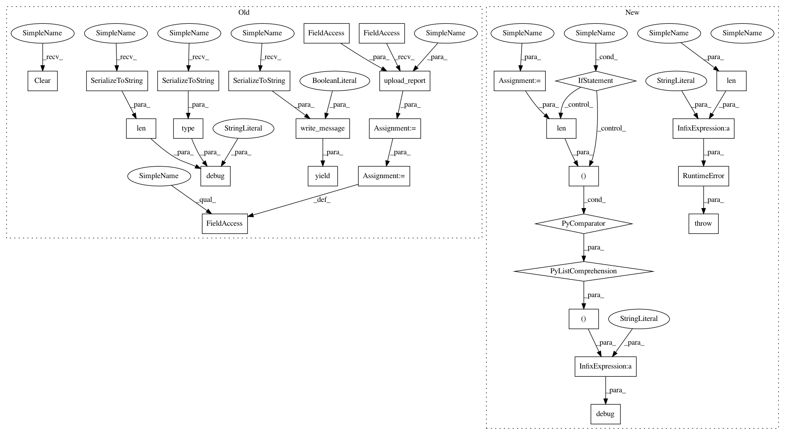

993332cab921ac734b7189587f564912de0e170a,lib/streamlit/proxy/ClientWebSocket.py,ClientWebSocket,_save_cloud,#ClientWebSocket#Any#Any#,131
Before Change
yield ws.write_message(progress_msg.SerializeToString(), binary=True)
report = connection.get_report_proto()
LOGGER.debug("Saving report of size %d and type %s",
len(report.SerializeToString()),
type(report.SerializeToString()))
url = yield self._cloud.upload_report(connection.id, report)
// Indicate that the save is done.
progress_msg.Clear()
progress_msg.report_uploaded = url
yield ws.write_message(progress_msg.SerializeToString(), binary=True)
except Exception as e:
// Horrible hack to show something if something breaks.
progress_msg.Clear()
progress_msg.report_uploaded = "ERROR: " + str(e)
After Change
yield ws.write_message(progress_msg.SerializeToString(), binary=True)
files = connection.serialize_report_to_files()
LOGGER.debug("to serialize: %s" % ([(name, len(bytes)) for name, bytes in files],))
raise RuntimeError("Received %i files from serialize_report_to_files()" % len(files))
// report = connection.get_report_proto()
// LOGGER.debug("Saving report of size %d and type %s",
// len(report.SerializeToString()),
In pattern: SUPERPATTERN
Frequency: 3
Non-data size: 28
Instances
Project Name: streamlit/streamlit
Commit Name: 993332cab921ac734b7189587f564912de0e170a
Time: 2018-07-06
Author: adrien.g.treuille@gmail.com
File Name: lib/streamlit/proxy/ClientWebSocket.py
Class Name: ClientWebSocket
Method Name: _save_cloud
Project Name: streamlit/streamlit
Commit Name: 07d121d0cf10396707f246b7a334fa1c4fea5905
Time: 2018-07-04
Author: adrien.g.treuille@gmail.com
File Name: lib/streamlit/proxy/ClientWebSocket.py
Class Name: ClientWebSocket
Method Name: _save_cloud
Project Name: streamlit/streamlit
Commit Name: 9a9d6d50a93d64f41ab3082bc69465d9d0702129
Time: 2018-07-05
Author: adrien.g.treuille@gmail.com
File Name: lib/streamlit/proxy/ClientWebSocket.py
Class Name: ClientWebSocket
Method Name: _save_cloud
Project Name: streamlit/streamlit
Commit Name: 993332cab921ac734b7189587f564912de0e170a
Time: 2018-07-06
Author: adrien.g.treuille@gmail.com
File Name: lib/streamlit/proxy/ClientWebSocket.py
Class Name: ClientWebSocket
Method Name: _save_cloud